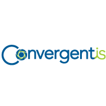

Alexander M. Chan
Software Architect and Full Stack Developer
I am a trusted team player with proven development team lead and management skills. I have worked in the US, Canada and Switzerland in multi-national environments and Fortune 500 companies across a wide range of industries. In addition, I have almost twenty years experience designing and architecting applications using web, SAP, and mobile technologies.
Experience

ConvergentIS
Canada
Senior Designer and Developer - September 2016 – Present
- A cross functional team player working with companies accross their design process from Design Sprint sessions through to the realization of full stack React and UI5 frontend and backend SAP builds.
ConvergentIS - TransCanada
Canada
July 2018 – Present
- Helped run Design Sprint Sessions to rapidly protype and design an application. Led the development team to build and deploy the offline hybrid iOS and Android safety reporting application.
ConvergentIS - Internal
Canada
July 2018 – July 2018
- Designed and built a serverless (AWS Lambda) React and Apollo GraphQL agile sprint Management tool for use with Microsoft DevOps
ConvergentIS - FitBit
United States
February 2018 – July 2018
- Customized a purchasing application to replace the standard application that was both easier to use and sped the time to entry of purchase requisitions.
ConvergentIS - CP Rail
Canada
June 2017 – February 2018
- Re-designed and developed a modern incident management system with customized web UI5 application for tracking all safety events accross the organization.
ConvergentIS - Fortis Alberta
Canada
May 2017 – June 2017
- Designed and built a prototype incident management tracking system
ConvergentIS - ATB Financial
Canada
March 2017 – June 2017
- Designed and developed UI5 custom SAP Banking applications for displaying client details
- Developed SAP My Inbox custom approvals
ConvergentIS - Enerflex
Canada
March 2017 – June 2017
- Enhanced HCM appraisal process
- Built and deployed a T4 Tax form fiori tile for employee self service
- Created a manager application to view all of their teams details
ConvergentIS - Veresen
Canada
February 2017 – March 2017
- Migrated portal from on premise to SAP Cloud Platform
ConvergentIS - City of Vancouver
Canada
January 2017 – March 2017
- Deployed and enhanced MM goods issue/goods receipt applications
ConvergentIS - CP Rail
Canada
September 2016 – December 2016
- Designed and developed ABAP oData services for a complete HCM Performance Management application with real time analytics for over 5000 employees
- Developed real time reporting for managers on the status of all appraisals
- Built applications using SAP Cloud Portal, Gateway and API as a service
Zenpare Inc.
Canada
Software Developer - July 2015 – August 2016
- Developed React custom projects.
Nestlé
Switzerland
Software Architect - January 2013 – June 2015
- Led a team of onshore and offshore developers for a customized project management system (PPM/RPM and cProjects)
- Developed an SAP UI5 project management application for deliverables creation and review
- Developed a kanban board for agile project management in angularjs and became an angular-ui contributor
PMI - Prinz and Partner
Switzerland
Development Consultant at Philip Morris International - November 2010 – December 2012
- Designed and developed a secure web based mobile approval system used globally (jQuery and REST services)
- Updated the design of business critical workflows used by over one hundred thousand approvals a year
- Developed a .NET Silverlight web based interface for self service requests in an SAP system
- Built a universal worklist application -- a central location for thousands of simultaneous users to see new tasks in near real-time across SAP and non-SAP systems
- Technical lead of a cross functional upgrade project from SAP ECC5 to ERP 6
Owens-Illinois
Switzerland
SAP Development Team Lead - January 2007 – October 2010
- Lead of European custom development team (ABAP/PI)
- Responsible for the architecture, design, development and maintenance of all reports, interfaces, conversions, forms and workflows
- Responsible for the management of a team of five onsite and offshore developers
- Performed code reviews and release to production decisions
- Reduced the number of development incidents by 25% since joining the project including significantly reducing the number of workflows open and in error
- Completed development roll-outs to four countries of the PP, MM, SD, FI/CO, and APO modules
- Performed impact analysis for migration from ECC5 to ERP 6 for all custom developments
- Integrated Adobe Flex components and Adobe Interactive Form developments with ABAP Web Dynpro applications
PMI - Blue Infinity
Switzerland
SAP Developer at Philip Morris International - August 2005 – January 2007
- Supported country roll-outs, gathered business requirements to design technical specifications, developed technical objects, handled and delegated support requests to offshore team, managing changes from design phase through to production
- Developed in MM, QM, PP and Document Management modules
- Supported workflow, ALE/IDOCs, and interfacing issues
Accenture
Canada, United States
SAP Consultant - September 2001 – July 2005
- Worked for a wide variety of clients solving complex business problems using various technologies with a primary focus on SAP ABAP development and application design. Worked directly at SAP developing industry specific components
- Clients included SAP, Enbridge, DynoNobel, Purolator, BC Hydro and Universal Studios

Weisshuhn & Weisshuhn
Germany
Web Developer - June 2000 – August 2000
- Developed Java apps that interfaced with a CORBA backend in a Linux/UNIX development environment
- Used XML and the DOM to generate dynamic web pages. Also worked with CSS, JavaScript, and HTML
Eclipse Web Solutions
Canada
Contract Design - September 1999 – May 2000
- Contracted to design web pages using Photoshop, HTML, ASP, and JavaScript
National Research Council
Canada
Developer - May 1999 – September 1999
- Programmed applications using Apache, Perl and JAVA on Unix and Linux systems
- Configured and optimized a search engine to index over 100 000 documents and helped author internal Linux security document
Skills
- Full Stack Development
- JavaScript, Node, React, TensorFlow JS, TypeScript, AngularJS (1.x), d3, cloud deployment (AWS and AWS Lambda/serverless), Linux, HTML5, Sass/CSS, SQL, GraphQL, webpack, parcel
- Machine and Deep Learning
- Tensorflow JS, Keras, Python
- SAP
- UI5, ABAP, oData services, ABAP OO, ALE/IDOCs, ABAP Workflow, Adobe PDF print forms, Smartforms, BSP, ALV Grid, BAPI, RFC, SAP Modules - Materials Management (MM), HCM and Appraisals (HR), Sales and Distribution (SD), Finance and Controlling (FI/CO), Production Planning (PP), Quality Management (QM), Claims Management (FS-CM), Utilities (IS-U), Project and Portfolio Management (RPM/PPM/cProjects)